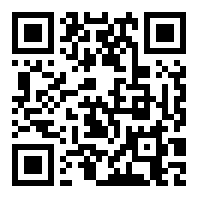

사내 학습동아리(CoP) AXIS — 폐쇄망 환경의 로컬 sLM·에이전트 활용연구회 — 가 만드는 자습 자료입니다. 클라우드 없이, 우리 장비에서, 우리 데이터로. 업무와 병행하며 각자 속도로 읽는 배경지식 세션입니다. 각 모듈 끝 퀴즈까지 풀면 완료 표시가 붙습니다.
이름 때문에 "로컬 sLM으로 에이전트를 만드는 게 목적"이라고 오해하기 쉬운데, 먼저 분명히 해둡니다.
하지 않는 것 — 로컬 sLM으로 범용 에이전트를 만들어 배포하는 것 — 에이전트는 도구 상자의 가장 큰 공구일 뿐, 모든 태스크의 정답이 아닙니다.
이 사이트를 휴대폰에서 열려면 QR을 스캔하세요 — 발표·모임 자리에서 각자 화면으로 따라올 수 있습니다.

퀴즈·자가진단 진행 상황을 코드로 복사해, 연구회 실습 플랫폼(사내 전용 — 킥오프 모임에서 접속 방법을 안내합니다) 계정에 등록할 수 있습니다. 진행 데이터는 이 브라우저에만 저장됩니다.